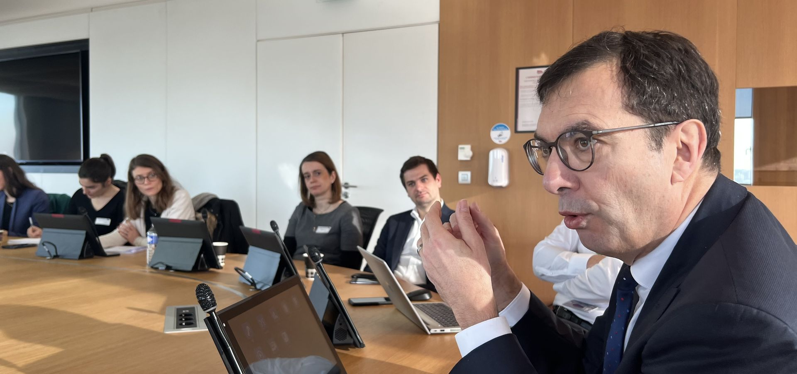
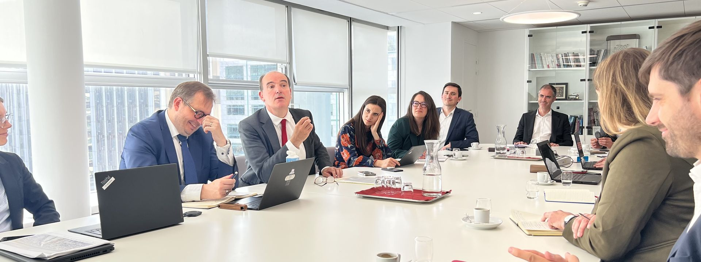
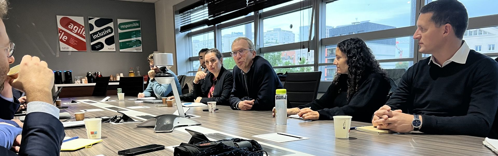
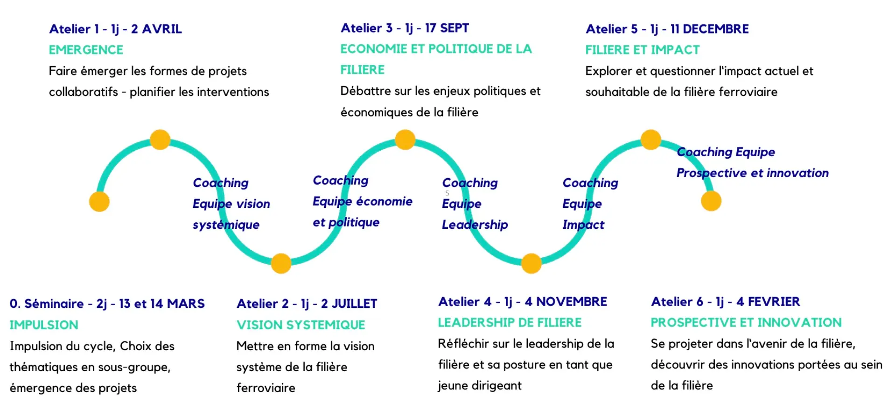
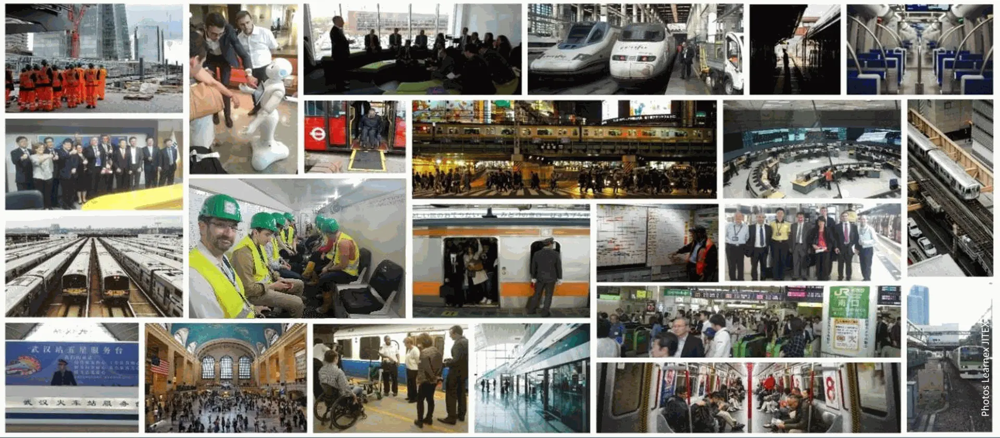

Organisation et programmation du cycle
Séminaire d'intégration
Le séminaire d'intégration de la promotion 2027 débute les jeudi 11 et vendredi 12 mars 2027. La suite du programme sera communiquée ultérieurement.
Les participants sont invités à bloquer ces dates dans leur agenda dès l'inscription, et à se rendre disponibles pour l'ensemble des sessions de ce séminaire d'intégration.
Le séminaire d'intégration de la promotion marque le début du cycle. Il permet à l'ensemble de la promotion de se rencontrer, de rencontrer également la promotion précédente, d'entamer les travaux du cycle et en particulier de lancer des projets apprenants de la promotion et de former les équipes.
Programmation des rencontres du cycle
L'organisation des rencontres Moisson-Desroches est tributaire des agendas des Présidents, de sorte qu'une programmation annuelle complète dès le début du cycle est difficile. Le programme de ces rencontres s'affine tout au long du cycle, les dates sont communiquées au fur et à mesure avec les meilleurs efforts pour les programmer le plus en amont possible. Ces rencontres s'échelonnent tout au long du cycle, d'avril à avril/mai de l'année suivante.



Les séminaires Moisson-Desroches
Le cycle est également cadencé par des séminaires pour jalonner les projets apprenants et permettre à la promotion de se retrouver régulièrement autour de grands thèmes de la filière. Le principe du cycle suit la structure suivante :
- Un séminaire d'intégration en début de cycle (mars, avec une seconde session en avril) ;
- Des séminaires répartis sur l'année pour accompagner les projets apprenants ;
- Un séminaire de clôture et de passage de relais à la nouvelle promotion (mars de l'année suivante).
Promotion 2027 : séminaire d'intégration les 11 et 12 mars 2027, programme du reste du cycle à suivre.
Pour information, promotion 2026 : séminaire d'intégration les 12 et 13 mars et le 2 avril 2026, séminaires les 2 juillet, 17 septembre, 4 novembre, 11 décembre 2026 et 4 février 2027, séminaire de clôture le 12 mars 2027.

Les détours ferroviaires
Le cycle Moisson-Desroches s'enrichit également de « détours ferroviaires » : des visites et rencontres organisées à l'initiative des participants eux-mêmes, au bénéfice de toute la promotion. Ces initiatives permettent à chacun de partager sa connaissance d'un acteur, d'un site ou d'une thématique avec ses pairs.
Organisation du voyage d'étude
Le voyage d'étude à l'étranger se déroule généralement sur une semaine, du lundi au vendredi, avec la possibilité que le programme déborde sur les week-ends avant et/ou après pour des raisons d'organisation du transport. Les dates et horaires précis du voyage d'étude sont communiqués aux participants sélectionnés dès leur intégration dans la promotion.
Les dates du voyage de la promotion 2027 seront communiquées ultérieurement. Pour information, le voyage de la promotion 2026 s'est déroulé dans la semaine du lundi 25 au vendredi 29 mai 2026.
Le programme détaillé, la destination et l'organisation du transport sont finalisés dans les mois précédant le voyage, en interaction avec la promotion.

Format des rencontres
Le cycle privilégie le présentiel, plus favorable à la construction de liens durables entre participants, tout en recourant au distanciel quand c'est plus efficace, notamment pour le travail en équipes. Les rencontres se tiennent dans le respect des obligations sanitaires en vigueur au moment de l'événement, le cas échéant.